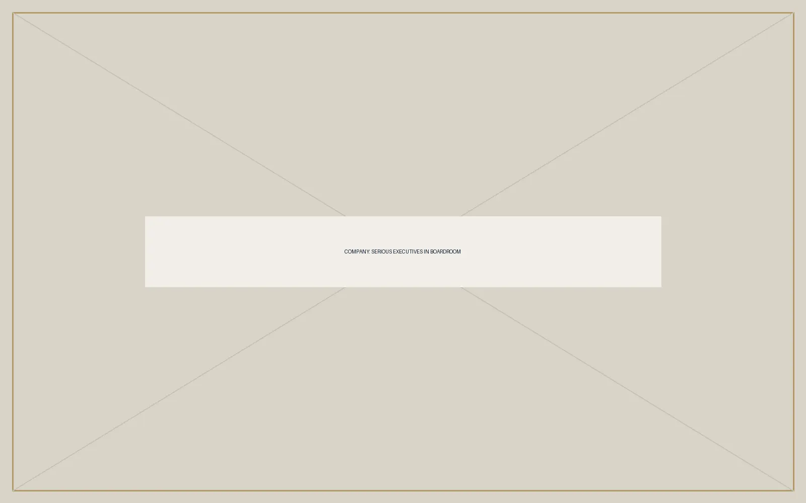
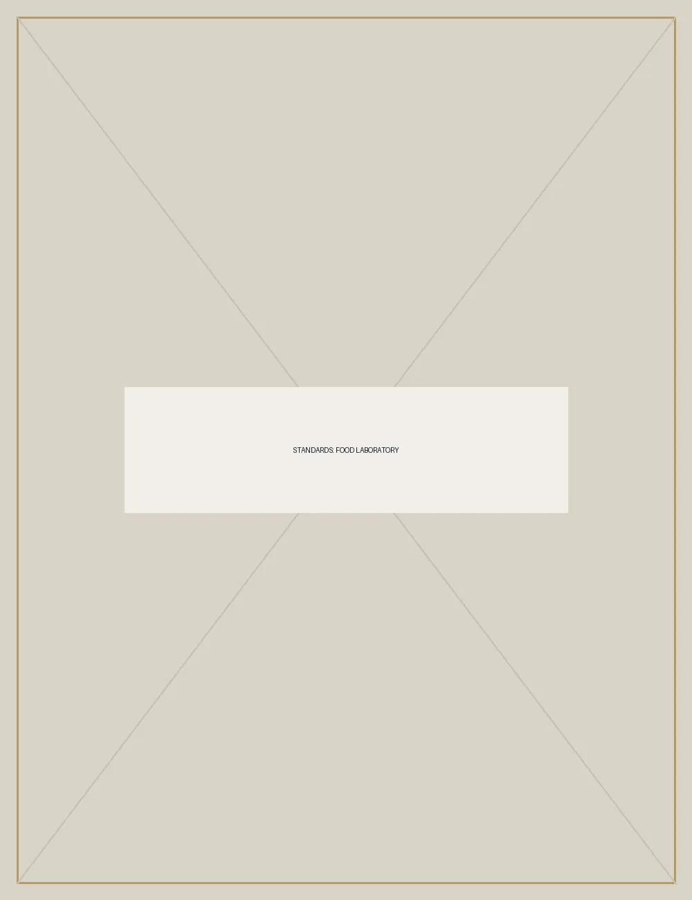
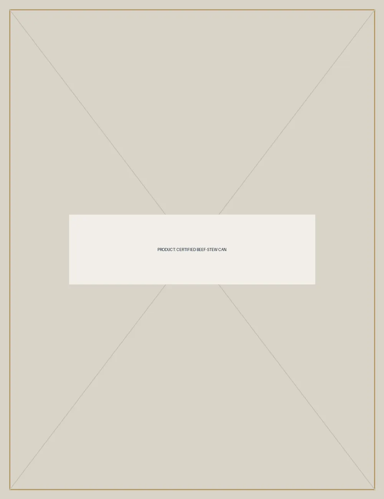

Agricultural Sourcing
Protein, root vegetables, and aromatics acquired under written standards.
The Global Standard in Beef-Stew
The Beef-Stew Co. is a global company focused on the sourcing, production, and responsible distribution of beef-stew.
Corporate profile
The Company
Based in North Carolina and operating with a global perspective, we oversee the full stew lifecycle with consistent standards and clear lines of accountability.
We believe beef-stew is too consequential to be approached casually.
“Our mandate has never changed. Beef must become stew, and it must do so under appropriate supervision.”Thaddeus R. Beef
Operations
Protein, root vegetables, and aromatics acquired under written standards.
Controlled braising and broth systems designed for repeatable outcomes.
Documented custody from vessel to table.

Customer Perspective
“The stew arrived at the agreed temperature and remained there. We consider the matter closed.”
Director of Facilities
Regional Institution
“At no point were we asked to compromise on broth.”
Vice President
Procurement
“We required beef-stew. The Beef-Stew Co. understood the assignment without unnecessary discussion.”
Senior Administrator
Confidential Client
Corporate Merchandise
Certified Beef-Stew, precision tableware, and protective business apparel.
Visit the storefront